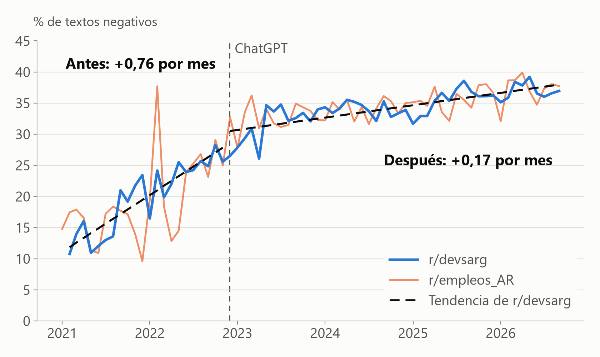
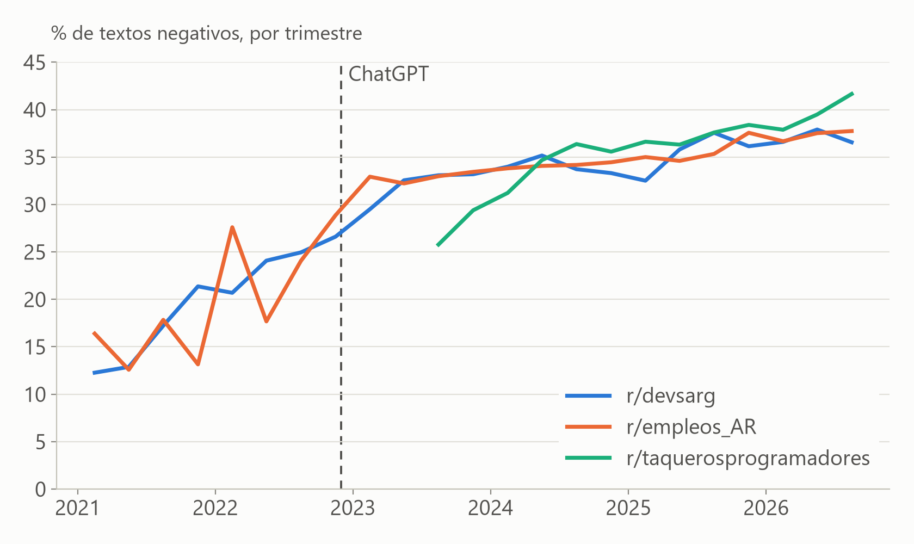
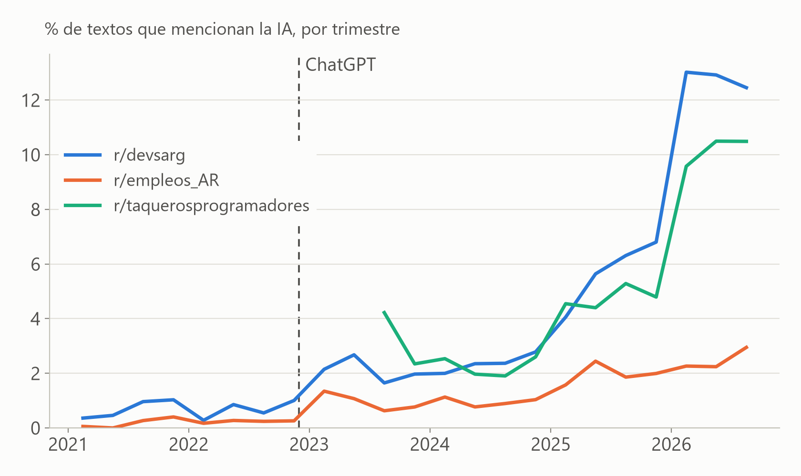

¿Cambió la conversación sobre trabajo IT desde ChatGPT?
Tono, temas y vocabulario en 1,9 millones de textos de Reddit, de 2021 a 2026, comparados con las ofertas de trabajo.
Grupo DIS-A-CLCD · Noviembre de 2026
Corpus y método
Qué analizamos
1,9 M
posts y comentarios de Reddit (Arctic Shift), de enero de 2021 a septiembre de 2026
3
r/devsarg, programadores AR
r/empleos_AR, trabajo en general
r/taquerosprogramadores, México
93 mil
avisos de Hacker News "Who is hiring?", más las series de Indeed (EE.UU.) y SIPA (Argentina)
30/11/22
corte: lanzamiento de ChatGPT. Comparamos antes y después
Técnicas
Sentimiento y emociones con RoBERTuito (pysentimiento)
Temas: diccionarios, TF-IDF y BERTopic
Vocabulario: word2vec antes y después del corte
Actores: entidades nombradas (spaCy) y diccionario de herramientas de IA
Cuidado con el volumen
Antes del corte hay solo el 5% de los textos: r/devsarg pasó de ~80 posts por trimestre en 2021 a más de 2.500. Por eso comparamos proporciones por mes o trimestre, nunca cantidades.
Lo que pasó alrededor del corte
Hipótesis A · Tono
La conversación se volvió más negativa, pero empezó antes de ChatGPT

17% a 37%
textos negativos en r/devsarg, de 2021 a 2026
+2,5 pts
salto en diciembre de 2022 (IC 0,8 a 4,2), chico al lado de la tendencia previa
82%
coincidencia del clasificador con una revisión manual de 60 textos
Clasificador RoBERTuito (pysentimiento) sobre los 1,9 millones de textos. Regresión segmentada con errores HAC.
Hipótesis A · Tono
Pasa lo mismo en el trabajo en general y en México

−1,6 pts
diferencia entre el cambio de r/devsarg y el de r/empleos_AR (IC 95%: −3,8 a 0,8). No es propio de IT
6% a 13%
enojo medio en r/devsarg, de 2021 a 2023
8% a 5%
alegría media en r/devsarg, de 2021 a 2026
Diferencia en diferencias con bootstrap por hilos. Emociones: robertuito-emotion-analysis, probabilidad media.
Hipótesis A · Temas
La IA es el gran cambio de temas, y llega en dos escalones

1 de cada 8
textos de r/devsarg que mencionan la IA en 2026. Antes del corte, menos de 1 de cada 100
47% Claude
de las menciones de herramientas de IA en el tercer trimestre de 2026. ChatGPT tenía el 92% en 2023
14% a 7%
posts sobre aprender a programar. Sueldos y cambio de trabajo no bajan
Diccionario de términos de IA sobre posts y comentarios. Temas: diccionarios validados a mano y BERTopic sobre 83 mil posts.
Hipótesis C · Vocabulario
"IA" cambió de significado; "trabajo" y "junior", no